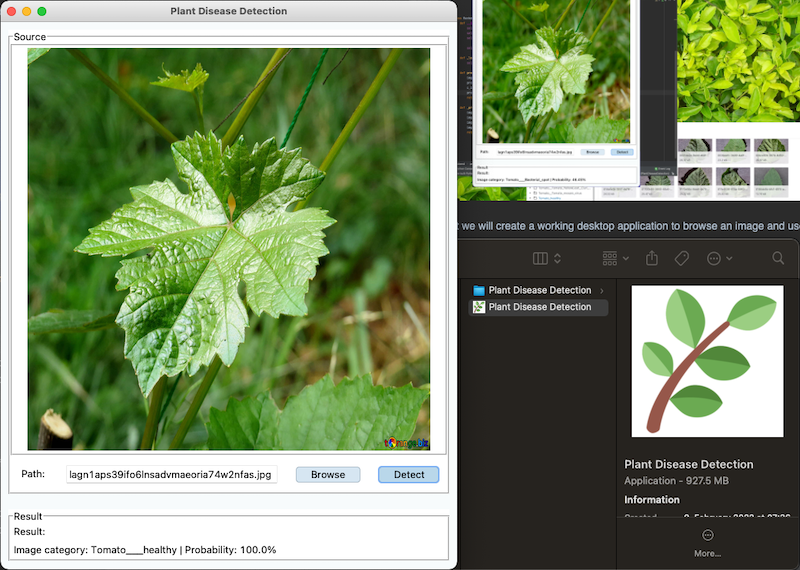
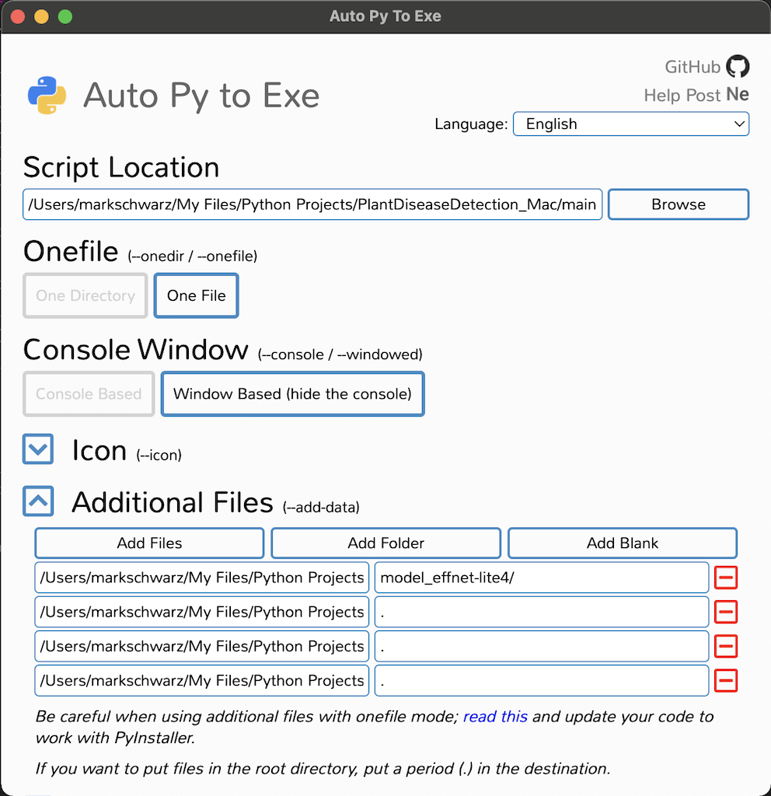

Part 3 - Make Executable
Plant Disease Detection: Part 3 Make an executable application

In this part we will convert the application we made in part 2 to an executable application. In other word, to run our app without using an IDE like a real world application.
What to expect
What to expect
Code Adjustment
Before we can export our code into an executable application we need to adjust some part of our code. The affected lines that need to be changed are those related to files and directory path. When exporting the code as an executable app, the path will be relatively to the app's location. Often there are components that need to be initialized on the current machine. The app will create a temporal folder in the machine's memory. In order to confine with the app, the path must be as a relative path.
Here are the code that will be replaced for every line of codes that pointed a path to a file or directory;
if getattr(sys, 'frozen', False) and hasattr(sys, 'MEIPASS'):
application_dir = sys._MEIPASS
else:
application_dir = os.path.dirname(os.path.abspath(__file__))
self._model_path = os.path.join(application_dir, 'FILE_NAME_HERE')
The effected lines that need to be changed are in backend.py script. This code of blocks will check if the code is
running as an app or is compiled on an IDE. Then is will return the correct path and will be defined in the variable
self._model_path.
Make an Executable Application
There are a couple of easy way to export our code by using a python library. The first way is to use a library call pyinstaller,
a library that uses command lines through a terminal. It might be a bit complex to use than the other method. The second
option is to use a library called auto-py-to-exe. It's build on pyinstaller but with GUI which makes it more easy
to use.
PyInstaller
Install pyinstaller library
Let's get started by installing pyinstall to our project by using the command line pip install pyinstaller
in your terminal. When you are using PyCharm you can use the terminal within out project. It won't take much time to
download and install.
Run the new installed pyinstaller
From part 2, we design our code structure that run the application from main.py.
By converting main.py to a .exe,which makes the project independent of a current virtual environment and an IDE,
will allow the project to run on its own as a desktop application.
Next we will run pyinstaller for the first time in order to avoid creating a lengthy command in the Terminal. By calling
$ pyinstaller --noconfirm --onefile --noconsole main.py, pyinstaller will packing all the project file into a .exe file.
As a result, 2 new folders and a .spec file will be created. The newly created folder build will contain ......., while
the dist will contain the actual app. For now if we try to run the application, it will crash immediately because we haven't
included all the necessary project files. Another file that has been generated, main.spec, will contain all the information
to successfully create the app. Through this file we will configure and compile the application once again. Let's take a look
inside the main.spec
Info
Here is an example how we can build the app in one long command line in the terminal:
pyinstaller --noconfirm --onedir --console --add-data "/Users/markschwarz/My Files/Python Projects/PlantDiseaseDetection_Mac/model_effnet-lite4:model_effnet-lite4/" "/Users/markschwarz/My Files/Python Projects/PlantDiseaseDetection_Mac/main.py".
(Optional) Auto Py to EXE
As mentioned before, auto-py-to-exe is basically pyinstaller with a graphical interface which makes it highly intuitive
to use than its original command-line predecessor. The library can be installed by using the command 1 $ pip install auto-py-to-exe.
After successfully installed the library, we can open it with the command $ auto-py-to-exe. A window the same as showing
below will pop up and will be ready to use. auto-py-to-exe have all the functionality as of pyinstaller.
In the auto-py-to-exe window we will setup as the followings
- Script Location: put only the main script that will be executed to start the problem,
main.py. - Onefile: set as One File to make it as a single file application
- Console Window: here we have the option to have display or hide a command prompt (or Terminal on macOS) when the app start running. I will choose Window Based (hide the console). Console Based is ideal for debugging the application.
- Icon: (optional) attach an icon image
- Additional Files: in this option we will need to attach the remaining scripts one by one, plus our TensorFlow model.
The settings in auto-py-to-exe should be similar like the one the picture below.

After finishing setup the window we will hit the CONVERT .PY TO .EXE button. Wait for a few seconds (or minutes) until it finishing the compiling and we should have an executable application.
It could take a few minutes up until the application actually opens. If it taken to long, you should take a look into the command prompt (or Terminal) and see what went wrong. One of the most common problems is that the directory or file path isn't correctly defined. If that is the case then please check out this section here
(Optional) Create an App Logo
One little detail that and won't take much time is to create a logo for the app. You might be able to create a very neat logo on your choice, but for the time being let's create something simple. A fast way is to create such a logo by using a favicon.
There is a website called favicon.io where you can generate favicons from pictures, texts, or even emojis. I decided to create it from an emoji. Go to this link, choose an emoji do you like, click on it and hit download. For me, I have chosen those icons in the picture below.
You can design your own logo and create logo images through appicon.co.
Before we can add an image to a logo, we need to convert it into a icns file. There is a nice
website named cloudconvert.
After we have an .icns file, we need to copy it into our project. Be cautions that we need to put the icon file into a
sub-category, in my case ./assets/app_icon.icns.
Next, open the setup.py that we just created earlier. Under OPTIONS put a new kay-value pair
with the key of iconfile and value as the location of the icon assets/app_icon.icns. It will look like this
{'iconfile': 'assets/app_icon.icns'}.
Run the Finished Application
Here is how our finished app looks like.